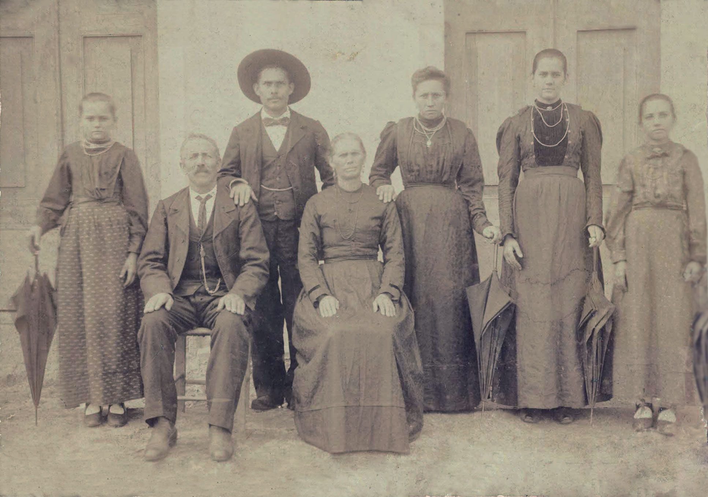

Pietro Mariot foi o filho mais velho de Matteo e Anna. Ele nasceu em 11 de janeiro de 1848 e era também conhecido pelo apelido de "Piero".{% cite ruolo %}{% cite leda --locator 21 %}
Em 27 de fevereiro de 1878, aos 30 anos, Pietro casou com Lucia Olivier, filha de Giacomo e Maria Losso. Lucia era de uma frazione de Longarone chamada Codissago. Os pais de Lucia já eram falecidos e ela tinha 21 anos.{% cite leda --locator 16 %}
Leda Mariot, sua neta, relata que o avô era bastante religioso e que ele dizia que quando era jovem em Longarone, ia no domingo à missa em Pirago e depois ia para a missa em Codissago. Mas, descobriu-se, ele não ia a Codissago por pura devoção, mas para ver Lucia. Outra história conta que um amigo de Pietro, tímido, pediu a ele para ajudá-lo a a entrar em contato com uma moça muito bonita em Codissago, para lhe arranjar uma namorada; mas a moça era ninguém menos que a mesma Lucia. Pietro dizia em tom de bom humor que quando ele viu uma moça tão bonita, arranjou um namoro para ele ao invés do amigo.{% cite leda --locator 21 %}
Lucia Olivier [Mariot] era também conhecida pelo apelido "Lucietta". Não se sabe se Lucia tinha irmãos.{% cite leda --locator 21 %}
Leda também relata que o avô ia cortar madeira na Áustria e levava Lucia com ele. E assim a primeira filha do casal, Maria Mariot, nasceu na Áustria, embora tenha sido registrada em Veneza. Maria também era conhecida pelo apelido "Marietta" e nasceu em 22 de dezembro de 1878.{% cite leda --locator 21 %}
Pietro aparentemente trabalhava como serrador, em uma serraria movida a água às margens do rio Piave, e quando tinha tempo, pescava no mesmo rio. Depois que emigrou para o Brasil, não encontrou serrarias como as da Itália e acabou por se especializar em trabalho com pedras.{% cite leda --locator 21 %}
Hipótese
Viagens para a Áustria
Percurso entre Muda (Longarone) e Cortina
A fronteira do Vêneto com o Império Austro-Húngaro de fato era mais próxima de Longarone na época. Um dos pontos mais próximos de Longarone em território austríaco era o que hoje se chama Cortina d'Ampezzo, a 54 quilômetros de Longarone por estradas modernas e 33 quilômetros em linha reta.
Para que Pietro pudesse ir até a Áustria ele precisaria de um meio de transporte, senão a tarefa seria imprática, pois o território é muito montanhoso.
Não é claro que tipo de transporte Pietro empregava, nem o período de tempo que ele ficava em território austríaco ou com que freqüência ele atravessava a fronteira. É improvável que ele fizesse o trajeto de trem, porque embora houvessem estradas de ferro na época, a rota mais próxima para a Áustria era por Verona via Vicenza. Talvez ele fosse a cavalo, ou carroça, para uma viagem de em média 2 horas.
Também não é claro se Pietro transportava algum tipo de carga entre os dois lugares ou se ele estabeleceu algum tipo de comércio do outro lado da fronteira.
Muda e Cortina em 1815-1918. Em amarelo está o Vêneto, em Rosa o Império Austro-Húngaro.
A viagem de Pietro, a mãe e as irmãs
Matteo e Marco viajaram para o Brasil partindo em meados de outubro de 1879, portanto Matteo deve ter conhecido a neta Marietta antes de partir.
Na ausência do pai, pelos próximos 3 anos, Pietro foi presumivelmente o líder da família, e provavelmente foi responsável pelo cuidado das irmãs.
Em 4 de fevereiro de 1882, Pietro e a família fizeram as malas e se dirigiram ao porto de Gênova. A seguir, embarcaram em um navio a vapor da empresa Rocco Piaggio & Figli chamado Maria. Na lista de passageiros está, nessa ordem, os nomes de Pietro, a esposa Lucia, a filha Maria, Teresa, Valentina, Margherita e Anna Fontanella.{% cite SIAN-maria %}
Teoria
Matteo foi ao Brasil com Marco, que era o quinto filho (homem). Mas por que Marco? Presumivelmente porque Pietro tinha uma filha recém-nascida, e Giovanni e Giosuè estavam no exército.
Quando Pietro viajou, Lucia estava grávida de quase 8 meses. Provavelmente Pietro julgou mais sábio viajar antes que o filho nascesse, pois assim não teria que ficar por tempo indeterminado na Itália nem viajar com duas crianças novas mais para frente.
Não sabemos se Matteo e Marco tiveram contato com a família depois de se instalar em Urussanga, mas é provável que eles tenham mandado notícias, porque Pietro sabia exatamente para onde ir. (É verdade que muitas pessoas de Longarone foram para Urussanga, mas Giosuè, por exemplo, não sabia onde a família estava, então Pietro deve ter tido alguma espécie de confirmação que Giosuè não teve.)
Nomes de Pietro, Lucia, Maria, Teresa, Valentina, Margherita e Anna Fontanella na lista de passageiros do vapor Maria, em páginas consecutivas.{% cite SIAN-maria %}
Em 7 de março de 1882 eles chegaram ao Rio de Janeiro. Segundo Leda e Quinto Baldessar, o grupo chegou em Urussanga em 11 de abril.{% cite baldessar --locator 120 %}
No dia 19 de abril de 1882, pouco mais de um mês depois de chegarem ao Brasil, o segundo filho de Pietro e Lucia, Cesare, nasceu em Urussanga. Ele foi provavelmente o primeiro Mariot brasileiro.
Leda diz que Lucia deu a luz 6 dias depois de passar em Laguna, mas essa história não bate com as datas, porque neste caso o grupo não poderia ter chegado em Urussanga dia 11. Quinto Baldessar conta um episódio em Laguna, confirmado independentemente por Leda:{% cite leda --locator 22 %}
Quando chegados em Laguna, tiveram que deixar o barco a vela que os trouxera do Desterro (Florianópolis) numa viagem muito agitada pelas ondas revoltas. Lucia saiu com seu marido Pietro a fim de procurar algum socorro que em Laguna já podia existir, afim de prevenir a viagem que ainda estava por continuar de Laguna até Morrinhos (Tubarão), e a partir daí, a pé, por mais de 60Km, passando por Pedras Grandes, Azambuja, Rancho dos Bugres, até Urussanga.
Minha avó Lúcia se sentiu tão mal, que deitou no chão da rua para aliviar-se. Saiu uma senhora que ali morava e a convidou para entrar em sua casa afim de se deitar um pouco e descansar. Ela agradeceu à gentil senhora que pouco depois voltou e lhe trouxe um travesseiro para descansar a cabeça.
{% reference baldessar %}, p. 120
Quando chegaram em Urussanga, encontraram uma casa de palha construída por Matteo e Marco para recebê-los em Rio Salto.
Baldessar relata que Pietro e Lucia obtiveram um lote em Morro do Peraro, e que conseguiram se instalar no perímetro mais urbano de Urussanga, onde mais tarde passou a morar Bruno Mariot (irmão de Leda, primo de Quinto Baldessar).{% cite baldessar --locator 121 %} No texto ficou ambíguo se eles se mudaram ou não.
Porto de Gênova, meados de 1890.
A família de Pietro
Pietro imigrou para o Brasil com sua esposa Lucia e a filha Maria que, naturalmente, era italiana. Mais ou menos um mês após sua chegada em Urussanga, nasceu o segundo filho, Cesare.
Depois de Cesare, só nasceram mulheres. Suas próximas filhas nasceram mais ou menos de 2 em 2 anos entre uma e outra. Elas foram: Anna (1884), Teresa (1886), Italia (também chamada de Giuseppina Italia) (1888), Margherita (1890) e Dusolina (1892).
Todos os filhos de Pietro e Lucia (pelo menos até aquela data) foram registrados em 21 abril de 1894 ao mesmo tempo.{% cite urussanga-pietro %}
Leda Mariot providenciou um resumo sobre o destino dos filhos de Pietro:
Maria (Marietta): (22/12/1878) nasceu na Áustria, casou com Euclides Peraro. Residiram em Cocal e perderam uma filha pequena. Depois foram para Araranguá. Morreu aos 72 anos com 9 filhos.
Cesare: (19/04/1882) Primeiro Mariot brasileiro. Casou com Amabile Savi Mondo e eventualmente se especializou em terra planagem. Mudaram-se para o Rio Grande do Sul nos anos 20, e Cesare continuou trabalhando na área, muitas vezes empregando os filhos mais velhos e os primos, filhos de Giosuè. Foi pai de Leda Mariot, que documentou boa parte da história dos Mariot de Santa Catarina.
Anna (Anetta): (10/04/1884) Casou com Emilio Savi e foram morar em Treviso. Morreram com idade bem avançada.
Teresa: (10/03/1886) Morreu com 17 anos vítima de tétano causado por um prego no pé.{% cite baldessar --locator 121 %} Pietro manteve uma fotografia dela na sala por mais de 35 anos.
Giuseppina Italia: (17/03/1888) Casou com o francês José Lavina. Estabeleceram-se em Bela Vista, depois Rio América. Morreu de infarto no norte do estado, na presença dos filhos.
Margherita: (26/07/1890) Casou com Antonio Baldessar. Estabeleceram-se em Nova Veneza e também faleceram com idade avançada. Foram pais de Quinto Baldessar, que escreveu o livro "Imigrantes: Sua História, Costumes e Tradições no processo de colonização no sul do Estado de Santa Catarina" em meados de 1991.
Dusolina: (1892) Casou com Antonio Crema, mas ficou viúva com dois filhos pequenos. Então casou-se com Arcangelo Bianchini. Foram morar em Laguna. Morreu com idade bem avançada, mas também ficou acamada muitos anos.
Pietro morreu em 7 de dezembro de 1933 em Urussanga. O registro de óbito diz que a causa foi cardiopatia crônica. Pietro morreu viúvo, mas ainda não sei data e causa da morte de sua esposa, Lucia, mas Leda diz que ela morreu com 73 anos, o que situa a morte em meados de 1929. O casal foi sepultado junto aos restos da filha Teresa.
Leda também afirma que Pietro era um homem extremamente saudável e a coisa mais grave que lhe aconteceu foi sofrer de uma hérnia que ele operou aos 84 anos (2 anos antes de falecer). E mesmo sem condições de trabalhar, gerenciou, enquanto deitado, o trabalho dos netos na construção de uma cantina.

Da esquerda para a direita:
Em pé: Margherita, Cesare, Anna, Italia e Dusolina.
Sentados: Pietro e Lucia. Meados de 1905.
Fonte: Paulo Mariot.
A família de Pietro
O primeiro Mariot brasileiro
Cesare Mariot foi o primeiro Mariot brasileiro e o primeiro a nascer com dupla cidadania, pois a Constituição Política do Imperio do Brazil de 1824 dizia, no, titulo 2º, Art. 6, que os nascidos em solo brasileiro eram brasileiros.{% cite constituicao-24 %}
Nessa época o "Brazil" (eles usavam "z"!) tinha um sistema legal mais sofisticado que o da Itália. Na Itália não havia constituição em 1882, mas havia o Statuto Albertino, que era a lei do Reino da Sardenha e servia como guia em questões constitucionais. No artigo 24 o estatuto determinava que todos os súditos do Reino tinham direitos civis e políticos (ou seja, eram italianos). E filhos de italianos eram italianos (como é até hoje).
No Brasil, a Constituição de 1891 (a primeira Constituição da República), em seu artigo 64, §4º estabelecia que seriam considerados cidadãos brasileiros "(...) os estrangeiros que, achando-se no Brazil aos 15 de novembro de 1889, não declararem, dentro de seis mezes depois de entrar em vigor a Constituição, o animo de conservar a nacionalidade de origem".
{% cite jusbrasil %}
E foi assim que os demais imigrantes da família Mariot tornaram-se brasileiros sem nunca ter se naturalizado. Aliás, esta é uma condição fundamental para reclamar a cidadania italiana nos dias de hoje: o ancestral italiano precisa ter sido naturalizado de forma tácita, sem ter pedido pela naturalização.
Cesare só não seria o primeiro Mariot brasileiro caso um outro membro da família tivesse se naturalizado antes d'ele ter nascido, o que é muito pouco provável.
Você sabe algo sobre Pietro ou outros fatos relatados aqui que não estão nesta página?
Por favor entre em contato e publicarei aqui.
 Pietro Mariot
Pietro Mariot
 Percurso entre Muda (Longarone) e Cortina
Percurso entre Muda (Longarone) e Cortina

 Nomes de Pietro, Lucia, Maria, Teresa, Valentina, Margherita e Anna Fontanella na lista de passageiros do vapor Maria, em páginas consecutivas.{% cite SIAN-maria %}
Nomes de Pietro, Lucia, Maria, Teresa, Valentina, Margherita e Anna Fontanella na lista de passageiros do vapor Maria, em páginas consecutivas.{% cite SIAN-maria %}